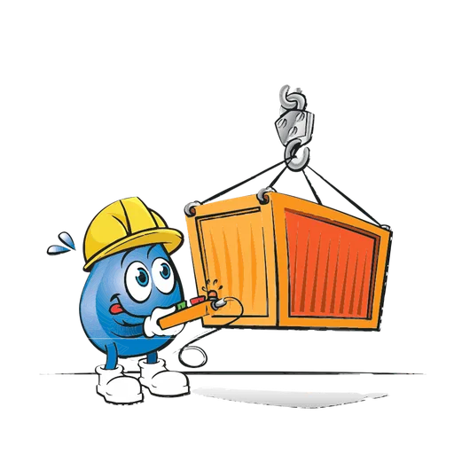

Génie civil, levage et transport
Pelles rétro, dumpers, bennes, pilonneuses, chargeuses, grues, nacelles, pick-up et balayeuse pour le terrassement, le levage, le transport et le nettoyage de voirie.
- Tête de démarquage 2000 bar
- Véhicule 3.5 T avec unité complète pour service WC
- 4x4 Defco
- Camion 2 essieux Fuso Canter Baroclean
- Camion 3 essieux Volvo Cappellotto
- Camion 4 essieux Kaiser
- Camion 4 essieux D. Kaiser
- Camion 5 essieux Scania Hercules
- Camion super aspirateur
- Camion nettoyage Molok RSP
- Pelle rétro Yanmar 0.9 T
- Pelle rétro CAT 301.7D CR 1.7 T
- Dumper sur chenilles – 500 kg de charge utile
- Pilonneuse – 60 kg essence
- Bobcat S70 – chargeuse compacte sur pneus
- Grue sur remorque
- Thermosilo 15 m³
- Benne 10 m³
- Benne 15 m³
- Benne bâchée (10 à 40 m³)
- Thermo silo à enrobés
- Machine type tractopelle
- Toilette mobile autonome
- Sanitaire mobile raccordable
- Container sanitaire 10″
- Container sanitaire 20″
- Container 10″
- Container 20″
- Container bureau 10″
- Container bureau 20″
- Malaxeur 8 m³ – sur berce multilift
- Compacteur de recyclage Multibenne
- Nacelle sur véhicule 3.5 T
- Pick-up diesel Isuzu (100 km/jour inclus)
- Mini-balayeuse Hochdorf MFH 2500
- Benne à déchets 10 m³ (pour balayures)
- Camion grue
- Balayeuse 3 essieux MAN
- Balayeuse 2 essieux MAN Kobit
- Camion basculant 4 essieux
- Camion basculant 5 essieux
- Benne avec grappin pour 4 essieux